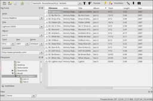
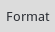
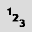
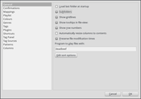

Puddletag
Dieser Artikel wurde für die folgenden Ubuntu-Versionen getestet:
Ubuntu 16.04 Xenial Xerus
Ubuntu 14.04 Trusty Tahr
Zum Verständnis dieses Artikels sind folgende Seiten hilfreich:
Das auf Python basierende Puddletag  ist ein weiteres Programm, mit dem sich die Metadaten (Tags) von Audiodateien bearbeiten lassen. Vorbild ist das Programm Mp3tag
ist ein weiteres Programm, mit dem sich die Metadaten (Tags) von Audiodateien bearbeiten lassen. Vorbild ist das Programm Mp3tag  , auch wenn der Entwickler selbst sagt: "Mp3tag kann Dinge, die Puddletag nicht kann und umgekehrt". Die Tags werden in einer Tabellenansicht angezeigt, was die Übersicht erleichtert. Die Programmoberfläche ist mehrsprachig ausgelegt, allerdings fehlt bisher eine deutsche Übersetzung.
, auch wenn der Entwickler selbst sagt: "Mp3tag kann Dinge, die Puddletag nicht kann und umgekehrt". Die Tags werden in einer Tabellenansicht angezeigt, was die Übersicht erleichtert. Die Programmoberfläche ist mehrsprachig ausgelegt, allerdings fehlt bisher eine deutsche Übersetzung.
Die folgenden Formate werden unterstützt:
ID3v1, ID3v2 (.mp3)
VorbisComments (.ogg, .flac)
Musepack (.mpc)
Monkey's Audio (.ape)
WavPack (.wv)
MP4 (.mp4, .m4a, etc.)
Alternativen gibt es einige: vom Klassiker EasyTAG über Ex Falso und Kid3 (KDE) bis hin zu QtTag, das wie Puddletag ebenfalls die Grafikbibliothek Qt verwendet. Eine Liste der entsprechenden Programme gibt es im Artikel Multimedia.
Installation¶
 Das Programm ist ab Ubuntu 12.04 in den offiziellen Paketquellen enthalten. Folgendes Paket muss installiert [1] werden:
Das Programm ist ab Ubuntu 12.04 in den offiziellen Paketquellen enthalten. Folgendes Paket muss installiert [1] werden:
puddletag (universe)
 mit apturl
mit apturl
Paketliste zum Kopieren:
sudo apt-get install puddletag
sudo aptitude install puddletag
PPA¶
Für die aktuellste Version kann man ein "Personal Package Archiv" (PPA) [2] nutzen.
Adresszeile zum Hinzufügen des PPAs:
ppa:webupd8team/puddletag
Hinweis!
Zusätzliche Fremdquellen können das System gefährden.
Ein PPA unterstützt nicht zwangsläufig alle Ubuntu-Versionen. Weitere Informationen sind der  PPA-Beschreibung des Eigentümers/Teams webupd8team zu entnehmen.
PPA-Beschreibung des Eigentümers/Teams webupd8team zu entnehmen.
Damit Pakete aus dem PPA genutzt werden können, müssen die Paketquellen neu eingelesen werden.
Nach dem Aktualisieren der Paketquellen erfolgt die Installation wie oben angegeben.
Fremdpaket¶
Je nach Geschmack kann man auch ein Fremdpaket  im .deb-Format herunterladen und manuell installieren.
im .deb-Format herunterladen und manuell installieren.
Hinweis!
Fremdpakete können das System gefährden.
Falls man Probleme mit fehlenden Abhängigkeiten bekommt, hilft folgende Liste weiter:
Paketliste zum Kopieren:
sudo apt-get install python-qt4 python-pyparsing python-mutagen python-configobj python-musicbrainz2
sudo aptitude install python-qt4 python-pyparsing python-mutagen python-configobj python-musicbrainz2
Bedienung¶

Das Programm ist bei Ubuntu-Varianten mit einem Anwendungs-Menü unter "Multimedia -> puddletag" zu finden.
Nach dem Programmstart präsentiert sich die Anwendung wie in nebenstehender Abbildung. Im Programmfenster links unten befindet sich ein Dateibaum, in dem man einen Musik-Ordner auswählt. Dieser kann bei Bedarf inklusive Unterordnern nach Audiodateien durchsucht werden.
Über verschiedene Zusatzfenster können auf Wunsch weitere Informationen eingeblendet werden. Dazu gehören:
"Artwork": Anzeige von Coverbildern
"Tags Source": Tagsuche mit Hilfe von
"Logs": Protokollfenster
"Mass Tagging": Bearbeiten vieler Dateien auf einmal
"Functions": diverse häufig benötigte Vorlagen, beispielsweise zur Umwandlung der Groß-/Kleinschreibung von Dateinamen
"Actions": Bündel aus mehreren Funktionen (Makros)
Die Erläuterung der Schaltflächen in der obersten Zeile liefert nachfolgende Tabelle:
| Puddletag | |
| Schaltfläche | Beschreibung |
| Ordnerauswahl | |
| Hinzufügen eines Ordners zur bestehenden Auswahl | |
| Aktualisieren | |
| Speichern | |
| Rückgängig | |
| Dateiname zu Tag (das entsprechende Muster wird links von der Schaltfläche ausgewählt) | |
 | Tag -> Dateiname |
|  | Format |
| Aktionen | |
| Schnellaktionen | |
| Funktionen | |
|  | Automatische Nummerierung |
| Textdatei -> Tag | |
| Ordner umbenennen | |
Funktionen¶
Obwohl die wichtigsten Funktionen über Symbole einfach zu erreichen sind, gibt es noch mehr. Diese Liste gibt dazu Auskunft.
Actions¶
Diese sind nichts anderes als eine Kombination einzelner Funktionen, die gemeinsam angewendet werden können. Daneben gibt es noch die "Quick Actions", die keine Angabe benötigen, auf welche Einzelfelder sie angewendet werden sollen. Stattdessen werden nur die markierten Zellen berücksichtigt.
Konfiguration¶
Die Einstellungsmöglichkeiten des Programms sind zahlreich und unter "Edit -> Preferences" zu finden. Einstellungen werden im Ordner ~/.puddletag gespeichert. Wichtig für den Einstieg sind die folgenden Unterpunkte:

Audioplayer¶
Unter "General" stellt man den Lieblings-AudioPlayer ein (Vorgabe ist amarok).
ID3v2¶
Das Standardformat ID3v2 für MP3-Dateien existiert in zwei wichtigen Ausprägungen: ID3v2.3 und das neuere ID3v2.4. Während letzteres von Puddletag und zahlreichen Programmen unter Ubuntu präferiert wird, wird für eine größtmögliche Kompabilität mit zahlreichen Hardwareplayern ID3v2.3 empfohlen (auch iTunes verwendet v2.3). Diese Einstellung wird in der aktuellen Version 0.10.3 noch als experimentell bezeichnet und ist im Abschnitt "Tags" zu finden
Links¶
Bugtracker
- Fehler melden
Multimedia - alternative Programme
Metadaten - nicht nur für Audiodateien
- Erstellt mit Inyoka
-
 2004 – 2017 ubuntuusers.de • Einige Rechte vorbehalten
2004 – 2017 ubuntuusers.de • Einige Rechte vorbehalten
Lizenz • Kontakt • Datenschutz • Impressum • Serverstatus -
Serverhousing gespendet von